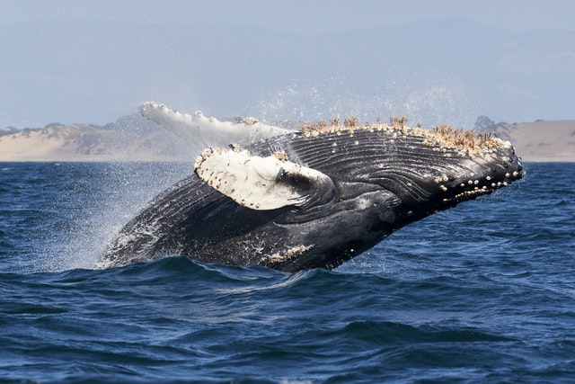

혹등고래
(흑고래, 학명: Megaptera novaeangliae)는 수염고랫과 혹등고래속에 딸린 고래이다.
성체는 몸길이가 12-16m 이고, 무게는 30톤 정도 나간다. 고래뛰기와 긴 가슴지느러미,
그리고 복잡한 노래소리로 잘 알려져 있다. 전 세계의 대양에 서식하나 지중해에서는
거의 목격되지 않는다.

혹등고래는 뭉툭하게 생긴 몸체를 지니고 있으며 입 근처의 머리와 아랫턱에 많은 혹이 나있다. 꼬리가 크고 지느러미발이 무척 길다. 입 안에는 아래 위 양쪽으로 각각 270 가닥에서 400가닥에 이르는 어두운 색상의 고래 수염이 나있다. 수염의 길이는 46~91cm이다. 배에는 배꼽 부근에서 아랫턱에 이르는 깊은 주름이 좌우 대칭으로 나있다. 이 주름은 14~22개 정도이다. 암컷은 반구형으로 돌출된 생식공을 가지고 있어 수컷과 구별된다. 수컷은 짝짓기를 하지 않을 땐 생식기가 생식공 안에 감추어져 있다. 새끼는 열대와 아열대의 월동해역에서 태어난다. 각각의 흑고래는 꼬리지느러미의 다양한 모양이 마치 지문처럼 구별되기 때문에 사진 촬영하여 연구되고 있다.